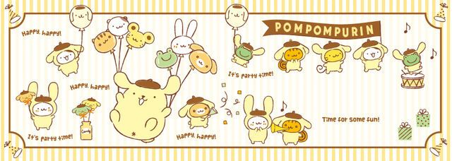

`
૮ ˃̣̣̥ ﻌ ˂̣̣̥ ა
PUDDING_OS ran into a tiny problem
Inspect.exe tried to peek at the surprise.
Collecting system data... redirecting to emergency cute video.
PUDDING BOARD UEFI · PomPom BIOS v2.22
Memory Test: 0222 MB OK
Detecting game drive... FOUND
Keyboard: press DEL or F2 to enter setup
Booting from: PUDDING_OS_LOVE_DISK
Pudding OS
Preparing the birthday desktop...
happy happy!

•ᴥ•
Birthday Park is locked
Enter the password to continue.
Static game site with puzzles, loading screens, and golden keys. admin
✨🌼🍮💛🎠🔑
magical welcome
Opening Pudding Park...
Every stage is a tiny ride. Finish a game, collect a golden key, and unlock the next piece of the birthday surprise.
♡
★
♪
Pudding OS game launcher
Welcome to Pudding Park
Complete the stages, collect keys, then open the ending folder.

•ᴥ•
🌼🎈🍮💌🎁
choose your ride
Magical Birthday Stages
Each stage unlocks the next. Finish every game, collect every key, then open the Finale Castle.
locked